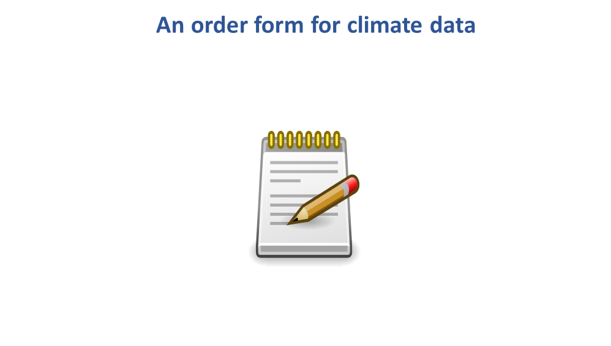
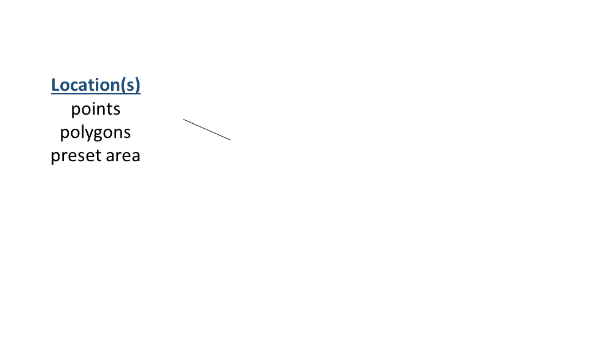
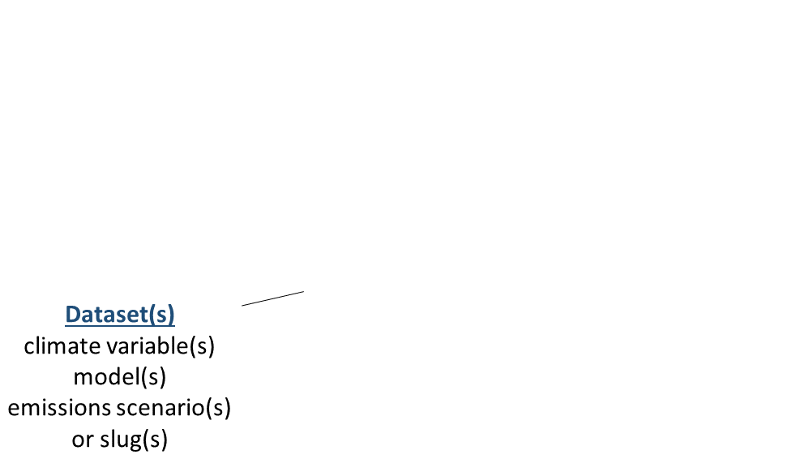
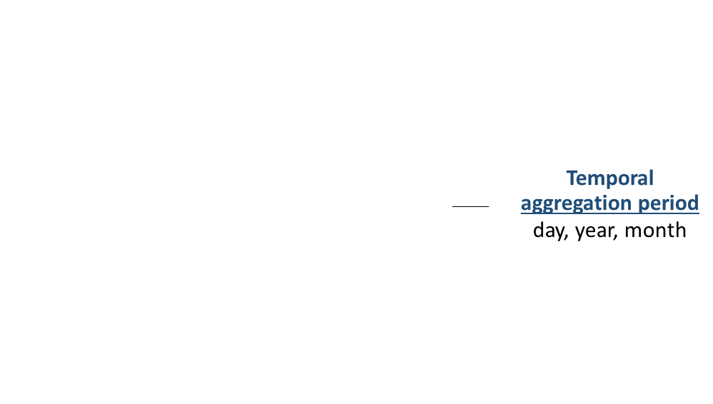
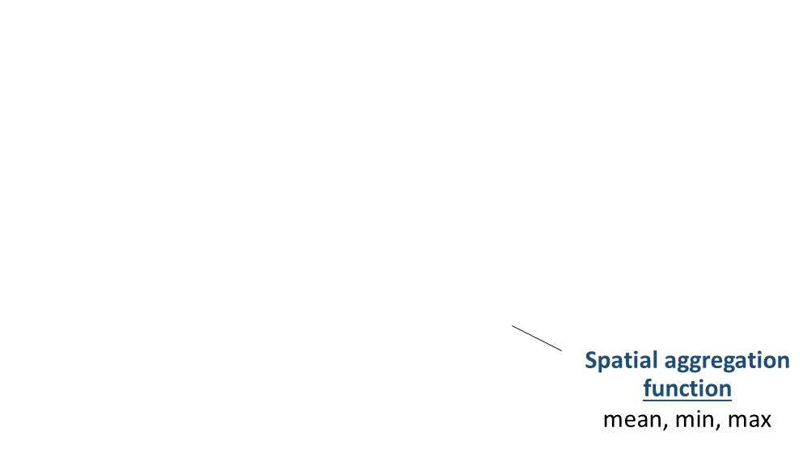

Working with Cal-Adapt Climate Data in R:
About Me…
Outcomes
1) Get familiar with caladaptR
2) Hands-on practice with:
a) importing Cal-Adapt into R via the API
3) Working Code Recipes
a) R Notebooks
foundational concepts
functional pRoficiency!
Cal-Adapt
Cal-Adapt is California’s official portal for peer-reviewed climate data.
Datasets are selected with guidance and priorities from California State agencies.
Modeled Climate Data
temperature 6 km
precipitation 6 km
snow water equivalent 6 km
relative humidity 6 km
surface solar radiation 6 km
wind speed
wildfire risk
drought scenarios
streamflow
sea level rise
other derived variables
Interpolated Observed Climate Data
Livneh data (1950-2013) 6 km
gridMet (1979-2020) 4 km
Spatial Extent
Spatial extent of LOCA downscaled climate data layers:
See also: What climate data does Cal-Adapt provide?
Cal-Adapt Data
Accessing Cal-Adapt Data
Feature
Cal-Adapt website
Cal-Adapt FTP
caladapt-py
caladaptR
Download rasters
Statewide
✔
✔
✔
✔
User area-of-interest
✔
✔
✔
10 recommended GCMs
✔
✔
✔
✔
All 32 GCMs
✔
✔
Query features
Points (user-provided)
✔
✔
✔
Lines (user-provided)
✔
✔
Polygons (user-provided)
✔
✔
✔
Polygons (presets, boundary layers)
✔
✔
Other
Extract underlying tables from preset charts
✔
More info:
Why you might want to work with Cal-Adapt data in R
Convert statements about climate into actionable info:
The rolling average of maximum daily temperature will increase by X
Species A, B, & C are most likely to survive in the projected climate envelope.
Custom visualizations
Integrate results with other data
census data
biodiversity / habitat
economic data
Take advantage of other R packages
Make your own custom models
caladaptR
Key Features
caladaptr is an API client packagemain job is to provide low-level functions for querying and importing Cal-Adapt data via the API
uses modern R programming conventions:
pipe friendly functions
accepts and returns standard data classes (e.g., tibble, sf, stars)
units encoded in the results
Main Uses
Retrieve values from any Cal-Adapt raster series
Query with user-provided points and polygons
Query built-in preset areas-of-interest
Download climate variables as tibbles (data frames) or rasters (tiffs & stars)
Prerequisites
caladaptR users need to know:
how to work with data in R
what data you’re looking for
how to use climate projections wisely
Learning caladaptR
Start here: https://ucanr-igis.github.io/caladaptr/
caladaptR workflow
In general, there are five steps to using caladaptR:
flowchart tab1 1) Determine your location(s) of interest. You can use your own points or polygons, or one of the preset areas-of-interest tab2 2) Create an API Request object tab1->tab2 tab3 3) Feed the API Request into a function that fetches data tab2->tab3 tab4 4) Wrangle the results into the format you require (e.g., filtering, sorting, joining, reshaping, add calculated columns, etc.) tab3->tab4 tab5 5) Continue on with your analysis or visualization tab4->tab5
API Request Objects





Building an API Request
A complete example:
my_cap <- ca_loc_pt(coords = c(-121.4687, 38.5938)) %>%
ca_cvar(c("tasmax", "tasmin")) %>%
ca_gcm(c("HadGEM2-ES", "CNRM-CM5", "CanESM2", "MIROC5")) %>%
ca_scenario(scenarios[1:2]) %>%
ca_period("year") %>%
ca_years(start = 2040, end = 2060)
An API Request object consists of between 2 and 4 components:
1. Location (required, pick one )
ca_loc_aoipreset()
Query a preset location(s)
ca_loc_pt()
Question point location(s)
ca_loc_sf()
Query simple feature location(s)
2. Dataset
Option 1 for downscaled modeled climate data from Scripps (including VIC) all 4 of the following constructor functions:
ca_cvar()
Select the climate variable(s) (i.e., precip, temperature)
ca_gcm()
Pick or more of the 10 Global Climate Models
ca_period()
Select temporal aggregation period (year, month, day)
ca_scenario()
Choose your emission scenario(s)
Option 2 for Livneh datasets all 3 of the following constructor functions:
ca_cvar()
Select the climate variable(s) (i.e., precip, temperature)
ca_livneh
TRUE
ca_period()
Select temporal aggregation period (year, month, day)
Option 3 for any raster series slug ’:
ca_slug()
Select a dataset by its slug
To find a slug, see Searching the Cal-Adapt Data Catalog
3. Start & end dates (optional, pick one )
ca_years()
Specify start & end by year
ca_dates()
Specify start & end by date
4. Options (required for polygons )
ca_options()
Spatial aggregation function(s)
Quick Example
Load the package:
Create an API request object:
<- ca_loc_pt (coords = c (- 117.0 , 33.1 )) %>% ## specify a location ca_cvar (c ("tasmax" , "tasmin" )) %>% ## climate variables ca_gcm (gcms[1 : 4 ]) %>% ## GCM(s) ca_scenario (scenarios[1 : 2 ]) %>% ## emission scenarios(s) ca_period ("year" ) %>% ## temporal aggregation period ca_years (start = 2040 , end = 2060 ) ## start and end dates
Check API request
## Cal-Adapt API Request
## Location(s):
## x: -117
## y: 33.1
## Variable(s): tasmax, tasmin
## Temporal aggregration period(s): year
## GCM(s): HadGEM2-ES, CNRM-CM5, CanESM2, MIROC5
## Scenario(s): rcp45, rcp85
## Dates: 2040-01-01 to 2060-12-31
## %>% ca_preflight ()## General issues
## - none found
## Issues for querying values
## - none found
## Issues for downloading rasters
## - none foundplot (sdzoo_cap, locagrid = TRUE )
Fetch data:
<- sdzoo_cap %>% ca_getvals_tbl (quiet = TRUE )
View the results
%>% slice (1 : 10 )
Notebook Time!
R Notebooks are written in “R Markdown”, which combines text and R code.
Tips
Every time you hit saves, it generates a HTML file in the background.
Remember when you’re in a R Notebook, the working directory is where the Rmd file resides .
Error creating notebook: path for html_dependency. Path not found: /tmp/RtmpjR1sPw
Means RStudio is having trouble rendering the HTML file in the background.
Can generally ignore until you’re done working.
To clear: Knit button → Clear Knitr Cache. Then save.
Notebook 1. Getting Started
In Notebook 1, you will:
Create API requests for i) a point, and ii) a preset area-of-interest (county)
Wrangle data for plotting
Plot a time series
Getting Help
Chat window
Share screen
Breakout rooms
Notebook 1. Getting Started | solutions
END PART I!


.png)
.png)
.png)
.png)
.png)


.png)
.png)
.png)
.png)
.png)
.png)
.png)
.png)
.png)
 Common error:
Common error: